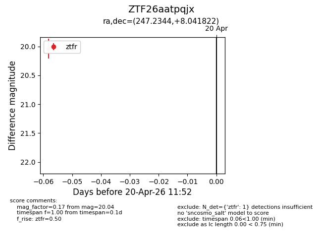
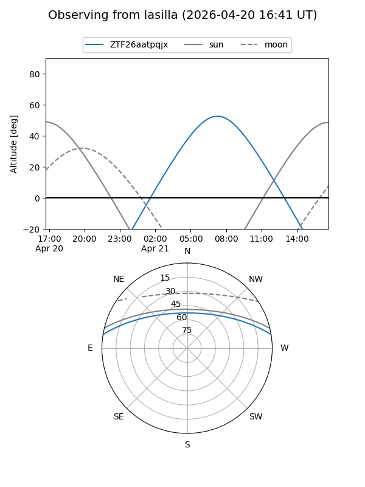
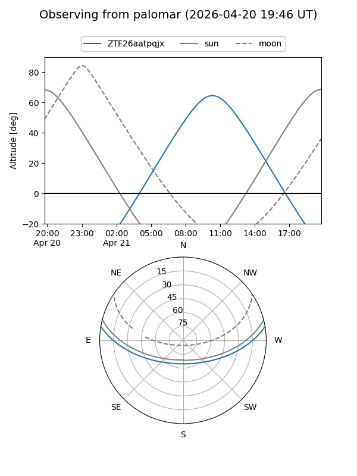

ZTF26aatpqjx
Target ZTF26aatpqjx at 2026-04-20 12:04
Aliases and brokers:
FINK: link
Lasair: link
ALeRCE: link
alt names
ZTF26aatpqjx (ztf,fink_ztf)
Coordinates:
equatorial (ra, dec) = 247.2344,+8.04182
equatorial (HMS+DMS) = 16:28:56.26,+08:02:30.56
galactic (l, b) = (23.1692,+35.24624)
Flags:
Photometry:
last ztfr=20.04
1 ztfr detections
Lightcurve

Visibility


Additional plots